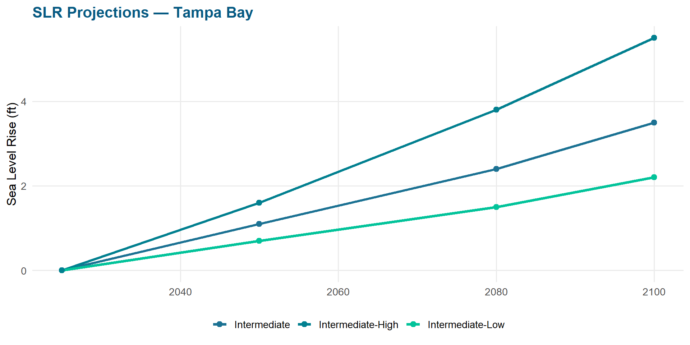
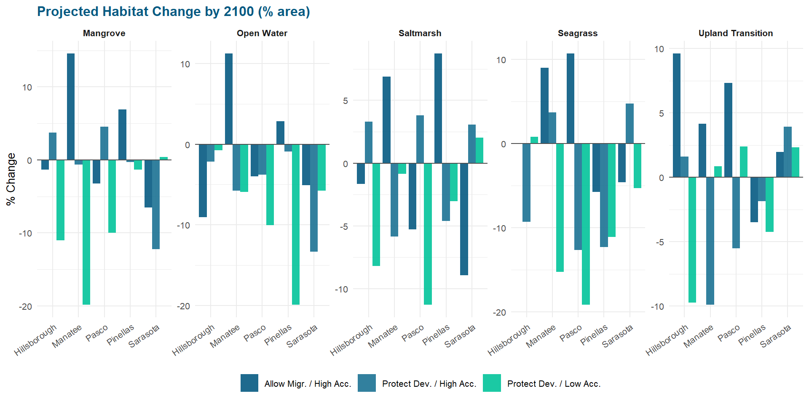
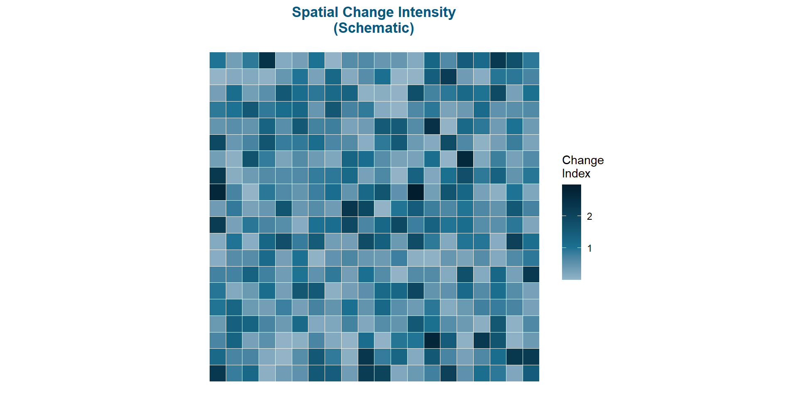
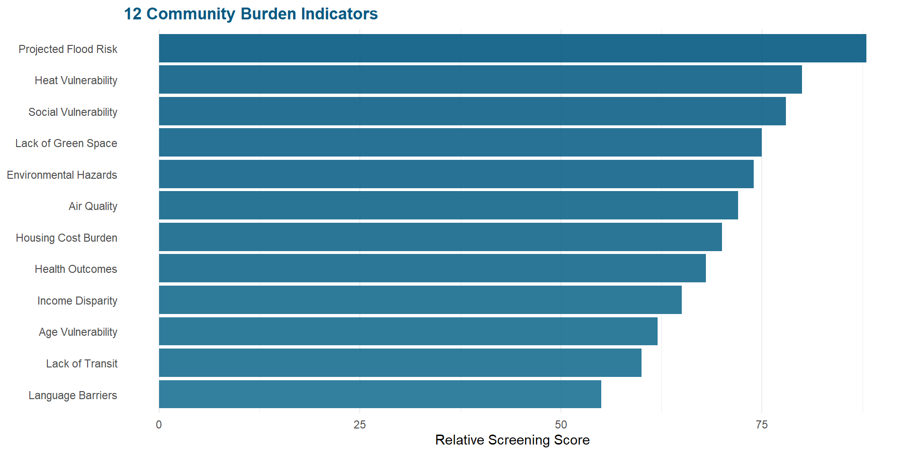
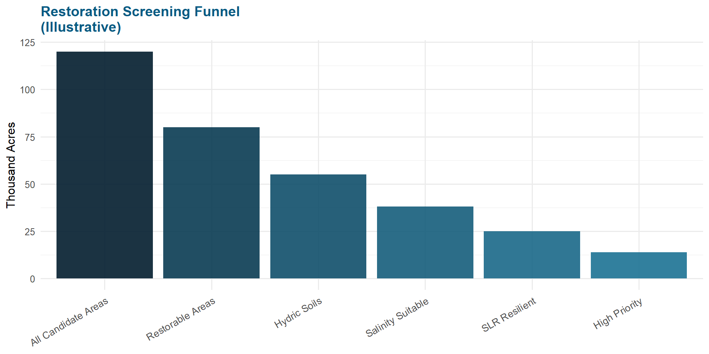
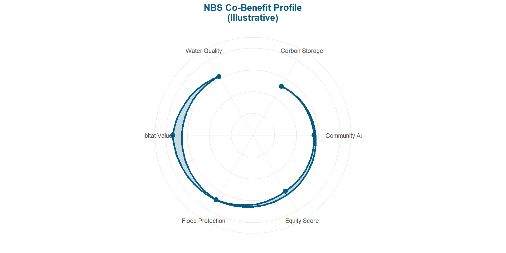

Coastal Habitat & Communities Assessments
2026-02-01
01
Coastal Habitat Vulnerability (SLR Focus)
02
Underserved Community Mapping
03
Restoration Opportunity Assessment
04
Natural & Nature-Based Solution Priorities
Expand prior Tampa Bay-focused efforts
Adaptation of the Sea Level Affecting Marsh Model (SLAMM) to also consider seagrass migration
Inform where and which habitat types might be vulnerable to future sea level rise (SLR)
Utilize recent Climate Science Advisory Panel scenarios (TBEP Tech. Pub. #14-25)

tampabay.wateratlas.usf.edu/discover/
| Dataset | Source |
|---|---|
| 2024 Seagrass | SWFWMD |
| 2024 Seagrass (Springs Coast) | SWFWMD |
| 2023 LULC | SWFWMD |
| Elevation (CUDEM) | NOAA |
| Florida DEM (2020) | FGDL |
📁 github.com/tbep-tech/tbcmp-analyze
| Land Management | Accretion | SLR | Runs |
|---|---|---|---|
| Allow Migration | High | Int-High | 3 |
| Allow Migration | High | Int-Low | 3 |
| Allow Migration | High | Intermediate | 3 |
| Allow Migration | Low | Int-High | 3 |
| Allow Migration | Low | Int-Low | 3 |
| Allow Migration | Low | Intermediate | 3 |
| Protect Developed | High | Int-High | 3 |
| Protect Developed | High | Int-Low | 3 |
| Protect Developed | High | Intermediate | 3 |
| Protect Developed | Low | Int-High | 3 |
| Protect Developed | Low | Int-Low | 3 |
| Protect Developed | Low | Intermediate | 3 |

Note: Values are illustrative pending final model QC.
Regional differences can be mapped to show where the greatest habitat category changes occurred between time periods.
Nowosad & Stepinski. 2018. Spatial association using V-measure…

📁 tbep-tech.github.io/equity-plan-mapping
TBEP Tech. Pub. #10-23

| # | Burden Category | Data Source | Status |
|---|---|---|---|
| 1 | Projected Flood Risk | FEMA / TBRPC | ✅ |
| 2 | Lack of Green Space | NLCD / FDOT | ✅ |
| 3 | Air Quality Index | EPA EJScreen | ✅ |
| 4 | Extreme Heat Vulnerability | NOAA / CDC | ✅ |
| 5 | Low Income / Poverty | ACS 5-yr | ✅ |
| 6 | Housing Cost Burden | HUD CHAS | ✅ |
| 7 | Limited Transit Access | FDOT / GTFS | ⏳ |
| 8 | Health Outcome Disparities | CDC PLACES | ✅ |
| 9 | Proximity to Hazardous Sites | EPA TRI / FDEP | ✅ |
| 10 | Social Vulnerability Index | CDC SVI | ✅ |
| 11 | Limited English Proficiency | ACS 5-yr | ✅ |
| 12 | Age Vulnerability (Youth + Elderly) | ACS 5-yr | ✅ |
📁 github.com/tbep-tech/tbcmp-community-drafts | tbep-tech.github.io/tbcmp-underserved-map/
TBEP Tech. Pub. #02-23 & #07-20

tbep.org/habitat-master-plan-update
Where appropriate, develop nature-based solutions (NBS) and project concepts that:
Optimize co-benefits:
Utilize Working Groups for iterative feedback throughout development
Draw on successful regional case studies (e.g., McCoys Creek, Jacksonville, FL)

Credit: City of Jacksonville & Groundwork Jacksonville
CoastalTampaBay.org
Ed Sherwood
TBEP Executive Director
📧 esherwood@tbep.org
A ROADMAP FOR FLOOD RISK PROJECT FUNDING AND IMPLEMENTATION
CoastalTampaBay.org